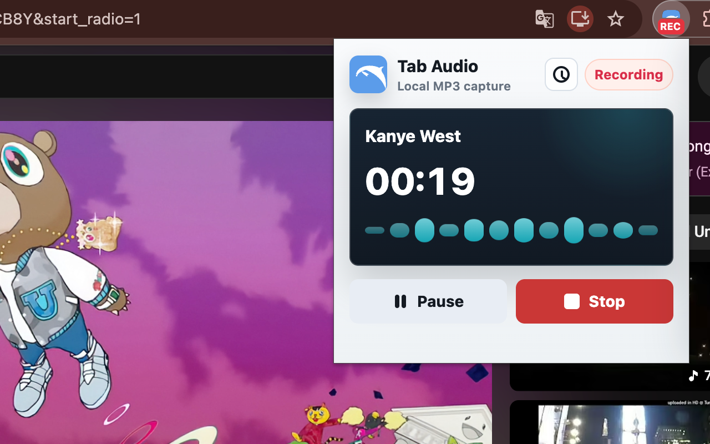

Lectures and online courses
Save spoken lessons, language material, and learning clips for later review.
Tab audio recorder
Save browser audio as a local MP3. No screen recording, uploads, or setup.
Local recording. No uploads.

How it works
Play the lecture, webinar, podcast, web player, or website audio you want to keep.
Click the extension and record audio from the active tab while you listen normally.
Stop recording, trim the segment if needed, and download a local MP3 file.
Why not screen recording
Screen recorders are useful when you need video. But if the task is only to save Chrome tab audio, they add extra steps: record video, export a large file, convert it to audio, then rename it.
Dolphin focuses on the smaller job: record Chrome audio from one tab and save it as a clean local audio file.
Use cases
Save spoken lessons, language material, and learning clips for later review.
Capture reference audio from browser players when you have permission to save it.
Record website audio behavior for testing, documentation, and reproducible reports.
Keep useful temporary browser audio without setting up desktop recording software.
Format
Best for smaller files, sharing, offline listening, lecture review, and everyday browser audio capture.
Current Dolphin export formatBest for editing workflows and uncompressed audio, but larger and not included in the current release.
Not available yetEditing
After recording, Dolphin shows a waveform so you can keep the part that matters and skip the extra silence at the beginning or end.
Move the trim handles, preview from the new start point, then save the final MP3. It is meant for quick cleanup, not heavy audio production.

Use the visible audio shape to find the right cut point.
Adjust the segment and hear the kept section before saving.
Avoid downloading a long file just to cut it somewhere else.
Shortcuts
Use Chrome extension shortcuts when timing matters. Press the shortcut once to start recording the active tab, then press it again to stop.
You can review or change extension shortcuts from Chrome's shortcut settings.
Open chrome://extensions/shortcuts, find Dolphin, then assign a shortcut for starting and stopping recording.
Pricing
Dolphin includes 5 free recordings each month. If you need more, unlock the current device with an invite code or choose lifetime access.
Free allowance
Early-bird lifetime
Invite code
History
Dolphin keeps a local recording history with the page title, source URL, duration, filename, and save time. It helps you return to the original lecture, webinar, interview, or web player later.
Keep the page link beside the recording so the context does not disappear.
Use the original page title as a practical memory cue.
History metadata stays on your device and is not uploaded by the extension.
Revisit the source page when you need notes, citations, or the next lesson.
Privacy
Dolphin records and encodes tab audio locally in Chrome. Your recordings are downloaded to your device and are not uploaded by the extension.
The extension uses Chrome permissions for the active tab, tab audio capture, downloads, and an offscreen recording document. It does not capture your microphone.
Read about local recording and privacyReady to record Chrome tab audio?
FAQ
Yes. Dolphin captures audio playing in the active Chrome tab after you start recording.
Yes. Dolphin is a focused Chrome audio recorder for saving current-tab audio as a local MP3 file.
No. Dolphin is not a screen recorder. It records tab audio only and does not create video files.
No. Recordings are processed locally in Chrome and downloaded to your device.
Dolphin currently exports MP3 files. WAV is a useful editing format, but it is not part of the current extension release.
No. Dolphin records audio from the active browser tab. It does not capture your microphone or full system audio.
Dolphin is designed for audio you have the right to capture. Some protected or DRM-based content may not be recordable.
Dolphin includes a free monthly recording allowance. Extra access can be unlocked with an invite code or lifetime access when available.